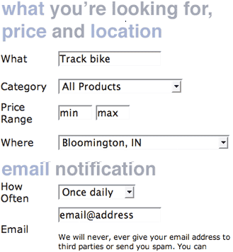
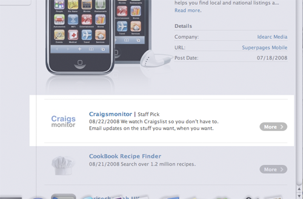

Craigsmonitor was Inkitecture's most successful web start-up. Becoming the 'staff pick' on for Apple iPhone web applications, the site went from a few hundred hits each day to thousands. The demands on the site, along with issues monetizing the application led to its eventual demise.
Craigslist is a popular site for buying and selling cars, computers, old clothes, or anything else under the sun. The problem with Craigslist is that in order to get a 'good deal' in a timely, especially for hard-to-find items, one must actively monitor site in order to be the 'first' on the buy.
The idea behind Craigsmonitor solved exactly this problem by monitoring Craigslist for desired items, and emailing the user when an item was found. Updates would occur on a daily, bi-daily, or hourly basis when updates were encountered.

The design was based on a highly simplistic model. This was done to ensure integration on micro devices (such as the iPhone) as well as ease of use for the user. The user would fill out a few simple fields and receive immediate results on their searches.
Craigsmonitor eventually became very popular, receiving thousands of daily hits, and receiving an Apple nod by becoming a "staff pick". Eventually demands on the site, along with logistical inability to monetize the site led to updates slowing, ultimately not delivering the promise of frequent updates. Our team at Inkitecture decided to discontinue the site for this reason.
